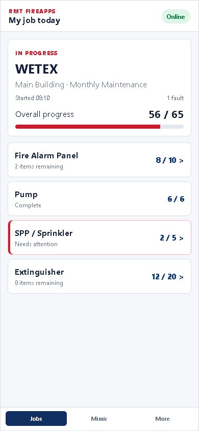
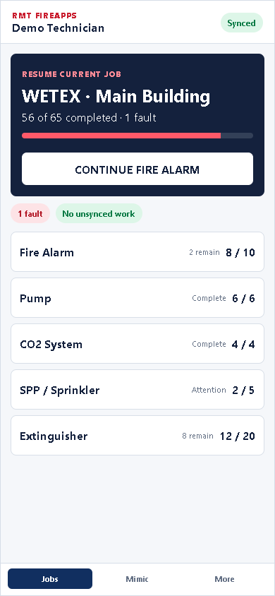
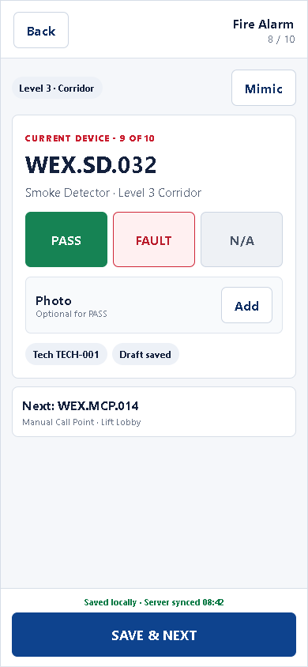
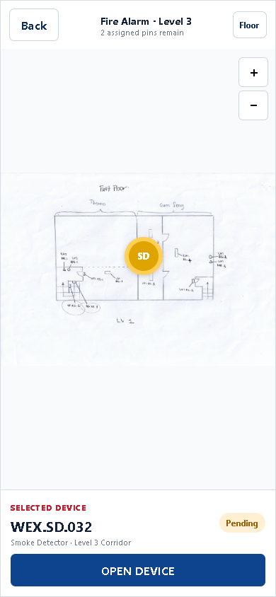
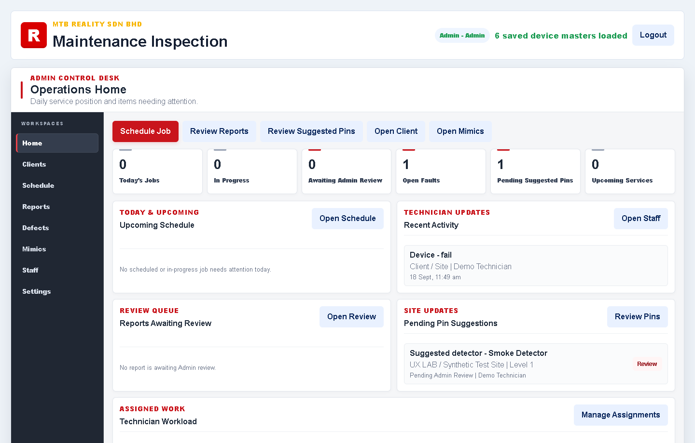
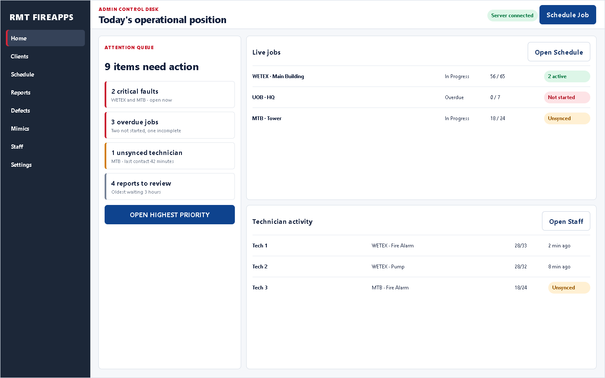

LOCAL REVIEW PACKAGE
7/7 measured journeys passExecutive Summary
Keep
Mimic-first field workShared recordsCritical gatesSave & NextPhoto evidence
Simplify
Equal-priority buttonsRepeated context fieldsHidden sync stateLong pre-action stacks
Recommendation
Jobs→System→Mimic→Device→Result→Save→Mimic
Current

Option A · Focused device

Option B · Mimic split
LEVEL 3 MIMIC
CURRENT DEVICE
WEX.SD.032
Level 3 Corridor
PASSFAULT
Current

Option A · System cards

Option B · Resume first

Current

Option A · PASS first

Option B · Progressive sheet
WEX.SD.032
Smoke Detector
＋ Photo evidence
PASSFAULT
Fault details appear only after FAULT
Current

Option A · Full map

Option B · Work rail
Current

Option A · Queue cards

Option B · Command queue

Everything at once
Technician name
Client / Site / Floor
Device / System
Condition
Photo
Remarks
Fault detail
Corrective action
→
Common action first
WETEX · L3 · WEX.SD.032
PASSFAULT
Photo evidence
Remarks · optional
FAULT selected → reveal defect and corrective fields
PENDING→SYNCING→SYNCED
SYNCED←SYNCING←PENDING
VERIFIEDAWAITING COUNTERPARTMISMATCH REVIEW REQUIREDOFFLINE DRAFT
Assigned job→Choose system→Mimic→Tap pin→PASS / FAULT + evidence→Save → Mimic→Complete & submit
Control desk→Attention queue→Open job→Faults / activity→Review report→Approve / return
Recommended combinationDesktop AMobile Home BInspection AMimic AAdmin B